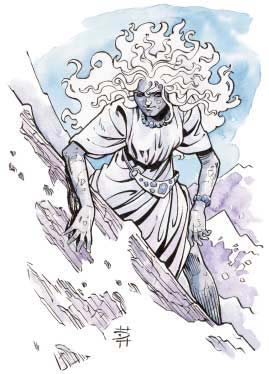

中型精类 (土系)

| 生命骰： | 7d6+28 (52 hp) |
| 先攻： | +1 |
| 速度： | 30 英尺，掘地 30 英尺 |
| 防御等级： | 20 (+1 敏捷，+9 天生)，接触 11，措手不及 19 |
| 基本攻击／擒抱： | +3/+7 |
| 攻击： | 挥击 +7 近战 |
| 全力攻击： | 2 挥击 +7 近战 |
| 伤害： | 挥击 1d6+4 |
| 面宽／触及： | 5 英尺/5 英尺 |
| 特殊攻击： | 类法术能力 |
| 特殊能力： | 掘地，免疫寒冷，大地掌控，昏暗视觉，山脉依赖 |
| 豁免： | 强韧 +8，反射 +6，意志 +6 |
| 属性： | 力量 19，敏捷 13，体质 18，智力 14，感知 13，魅力 16 |
| 技能： | 工艺（石匠） +12，工艺（陷阱制作） +12，交涉 +5，知识（建筑与工程） +12，知识（自然） +12，聆听 +13，搜索 +2（针对密门和暗格时+4），察言观色 +11，侦察 +13，生存 +11（在自然地表环境中+13） |
| 专长： | 警觉，强韧加强，追踪 |
| 地域： | 任意山脉 |
| 组织： | 单独 |
| 挑战等级： | 7 |
| 宝物： | 标准 |
| 阵营： | 总是守序中立 |
| 进化： | 8�C14 HD (中型) |
如同树精或瀑泽林精（fossergrim），山精是一种与自然界某些特征有着内在联系的精类生物。对于山精而言，这个特征无可否认是重要的――一座山脉。山精守护其山脉家园的自然状态，保护它免受矿工和采石者的侵害，并抵御剧烈的侵蚀力量。个别的矿工可能会被魅惑、警告并送走，但那些前去山精的山脉上进行采矿或采石的大型队伍总是遭遇灾难，或者干脆杳无音信。
山精的外貌各异，但都类似于严肃、强壮的人形女性，有着石质般的皮肤。山精的头发看起来像一缕缕丝状的苔藓，当其山峰被雪覆盖时呈白色。山精常常穿着由山脉中的金属编织而成的长袍，许多山精佩戴着未经切割的宝石和珍贵石头制成的首饰。
山精是其山脉的凶猛守护者，经常使用她的法术给那些试图掠夺山脉的人带来灾难。此类山脉因此获得了被诅咒或邪恶的名声，有时会吸引寻求避难所的邪恶人形生物部落或巨人的注意。作为一个守序生物，山精经常会与这样的部落达成相互保护的协议。
山精会说矮人语、木族语和土族语。
山精利用其对石头的知识和工程技能在其山脉上制造许多致命的塌陷点和雪崩点。当面对敌人时，山精常常魅惑其中一个，以引诱其余敌人进入其陷阱能发挥最大效果的地方。然后山精从藏身处触发陷阱，希望杀死、致残或足够惊吓敌人以迫使他们逃离。更麻烦和更顽固的敌人则将承受山精施法能力的全部威力。
山精可以通过召唤自然盟友 VI 法术（summon nature's ally VI）被召唤。
类法术能力 (Spell-Like Abilities)：随意施放――石言术（stone tell），传送术（仅限于从其山脉上任意点传送到山脉上其他任意点）；每日三次――魅惑怪物（charm monster），柔石术（soften earth and stone），刺石术（spike stones），塑石术（stone shape），化泥为石（transmute mud to rock），化石为泥（transmute rock to mud）；每日一次――地震术（earthquake），移土术（move earth）。施法者等级 14 级；豁免 DC 13 + 法术等级。
掘地 (Burrow) (Ex)：山精可以像鱼儿在水中游泳一样轻松地穿过石头、泥土或几乎任何其他类型的土壤（金属除外）。其掘地不会留下隧道或孔洞，也不会产生任何涟漪或存在迹象。在包含掘地山精的区域施放移土术（move earth）会将山精击退 30 英尺，并使其震慑 1 轮，除非她成功通过一次强韧豁免（DC 19）。
大地掌控 (Earth Mastery) (Ex)：如果山精的敌人接触地面，山精在攻击和伤害检定上获得 +1 加值。
山脉依赖 (Mountain Dependency) (Su)：每个山精都神秘地与其山脉绑定。如果山精远离其山脉超过 1 英里，她将在 4d6 小时内死亡。